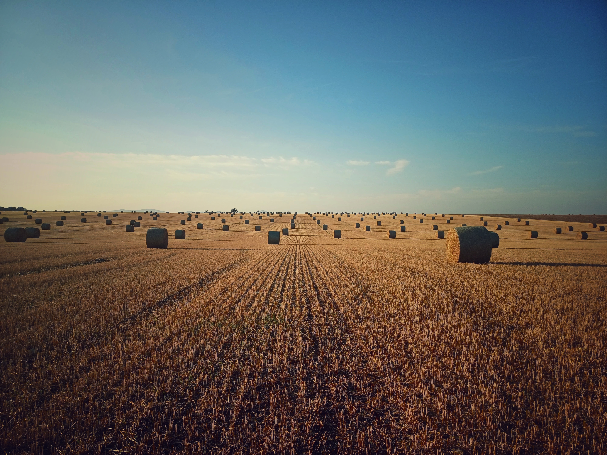

Fotografie a střih videa

Tvorba audiovizuálního obsahu od samotného zachycení snímku, přes postprodukci až po samotné vydání na soc. sítích
- Vizuální tvorba: Panoramatické, portrétové a eventové fotografie. Video záběry za použití dronu.
- Postprodukce: Úprava fotografii, základní střich, práce s barvami a úprava zvuku.